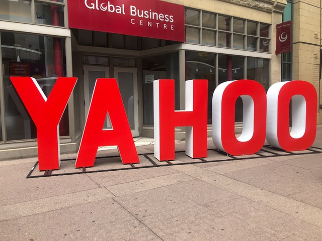

Internet Search
While the browser wars were happening,and browsing the internet was getting more and more accessible. It still lacked a directory or guide to site. Search Engines were the answer, but how they came to be is interesting. To understand how Internet search works, we have to go way back, before even Google. The roots of Search can be found at Stanford University. While going to Stanford Jerry Yang and David Filo they hit on an idea that would become the basis for what used to be America’s best known businesses, Yahoo! When they couldn’t find out UpToDate sports information to use in their basketball league, they decided to build a directory which show users where to find stuff they were looking for on the Internet. At the dawn of the Internet, no one was using it for business or commerce. One school of thought was that Internet was the new “media” and media had always been supported by advertisement. The founders of Yahoo! faced a serious dilemma. Placing advertisements on their website risked alienating their users. But they had already been funded by the venture capitalists and there wasn’t another means to make money on their new site. Late in 1995, Yahoo began taking banner ads. And the users didn’t seem to care! Their user base kept increasing. Yahoo! had shown how to make money on the Internet. The boom had begun! Yahoo’s primary competition was Excite. They had developed a better technology which, instead of websites catalogued and sorted by humans, Excite was doing it by pure software. It crawled the web for the search that the user typed and found pages matching it. It was rudimentary form of what Internet Search as it exists today. By 1997, the web was exploding, and the sites were busy redeveloping themselves as Portals, places filled with technology designed to keep users within the platform, for the benefit of advertisers. In the race to make money, however, the companies lost track of why the users were coming to their portals in the first place. To Search for something! Most of the search results came up to be sites wanting to sell you something rather than real results.
The world was primed for Google! Two Stanford University students, Sergei Brin and Larry Page. Larry had the genius insight into Search that helped launch Google. The insight though, was really simple. The Internet was running a popularity contest on it’s own content and the number of times a page was linked by other sites was an indicator how useful or relevant it was. So, all you had to do was to count the links to know which one was at the top. Launched on Stanford’s website, founders struggled with the growing popularity of their genius, yet simple innovation. Their popularity almost brought the Stanford internet down, so the university administrators made them move it off campus. They started working with Vinod Khosla, the founder of Sun Microsystems, who introduced them to Excite. Excite was at the time bitterly competing with Yahoo and coming up short. The CTO at Excite, after a demo by Google Founders, took the idea to Excite’s CEO but they were ambivalent. Excite thought that Search was generic, and they could do it just as well as Google. It wasn’t just Excite who failed to see the potential though, every Search company did just that. In frustration, Page and Brin, sought out David Cheriton, a professor at Stanford and a serial entrepreneur. He introduced them to Andy Bechtolsheim. He was so excited for the idea that after a first demo, wrote a check on the spot. Soon, they were able to raise additional funds from other investors and were soon in business. After deciding against the beaten path and deciding not to have banner ads on their product at all, Google had to figure out a business model in the Search business. They found salvation in the form of Bill Gross, the founder of IdeaLab that was concentrating on the concept of web advertising. Gross’ idea was simple, to personalize the ads based on what the user was searching on! Basically, use the search engine as a basic market research tool. Use what the user was searching on to build a profile on them and then use it to target the advertising. Instead of random ads that don’t make sense, these ads would be relevant, personalized and also have better chance of generating interactions with the user, which will help refine the profile even more. Gross launched a site called overture.com based on the idea and it was instantly successful. Overture.com came to the attention of Google founders, who saw it as an answer to their business model quandry. After unsuccessful meetings to link the two companies together, Google release Adwords, which was very similar to the Keywords concept used by Bill Gross and Overture.com in their operation. After suing Google about the similarity of the concept, both sides settled out of court and decided to work together. Google would tweak Gross’ idea in important ways, such as separating search results and ads which resulted in a better user experience. And so, the foundation of Internet Search was laid, one that would be supposedly equitable to both the advertisers and users alike.